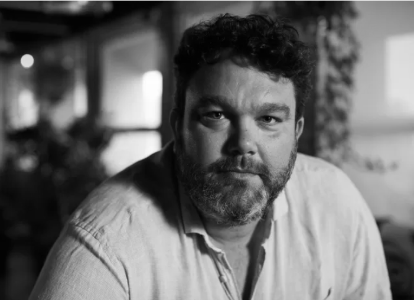

IMIGRATORIA FILMES
Filme fora do Brasil com uma equipe experiente e brasileira. Trabalhamos desde a prestação de serviços específicos - como criação de roteiro, permissões para filmagens, profissionais e casting - até a produção completa do seu projeto.
.png)
.png)
.png)
NOSSO TIME

JULIANA CALEJAN
Com uma sólida carreira de 15 anos no mercado publicitário brasileiro, Juliana Calejan se destaca como uma roteirista e produtora talentosa. Radicada em Portugal desde 2018, Juliana combinou sua expertise criativa com a rica cultura luso-brasileira, contribuindo significativamente para a indústria local. Entre seus principais trabalhos está o roteiro do longa-metragem Amo-te Imenso, que explora as conexões culturais entre Brasil e Portugal. Além disso, é a criadora de uma série de dramédia que retrata a vida de imigrantes brasileiros em Portugal, abordando temas como adaptação, identidade e pertencimento. A série encontra-se em fase de captação de recursos, mas já demonstra potencial para conectar diferentes públicos por meio de sua narrativa envolvente e autêntica.
GUSTAVO CABRAL
Gustavo Cabral é um nome consolidado no mercado audiovisual, com uma impressionante trajetória de 17 anos de atuação entre Brasil, Portugal e Irlanda. Com sua experiência robusta, já produziu mais de 20 longas-metragens, 15 séries e 3 novelas, além de colaborar com grandes players como HBO, Globo Play, Netflix e TV Cultura. Dividindo seu tempo entre Portugal e Irlanda, Gustavo agrega uma perspectiva global aos projetos, facilitando colaborações internacionais e garantindo uma execução impecável em cada etapa de produção. Sua visão estratégica e conhecimento técnico são peças-chave para o sucesso de nossos empreendimentos audiovisuais.FRANCISCO
Com mais de 15 anos de experiência no setor audiovisual, Francisco Slade é um filmmaker versátil e apaixonado, formado em cinema e especializado em diversas áreas da produção. Sua trajetória inclui trabalhos como editor de vídeo, diretor, sound designer e filmmaker, abrangendo uma ampla gama de formatos, desde cinema e TV até videoclipes. Francisco é reconhecido por sua habilidade em transformar ideias em narrativas visuais impactantes, combinando criatividade com um domínio técnico excepcional. Sua experiência diversificada torna cada projeto único, com uma assinatura artística inconfundível.VOOS CURTOS
O Imigratoria promove encontros semanais para conectar pessoas e… produzir micro- filmes! Neste projeto colaborativo, propomos um roteiro e uma locação e todo o resto fica por conta dos talentos que ali vão estar. Acreditamos que mais incrível do que conhecer profissionais maravilhosos, é poder trabalhar com eles!